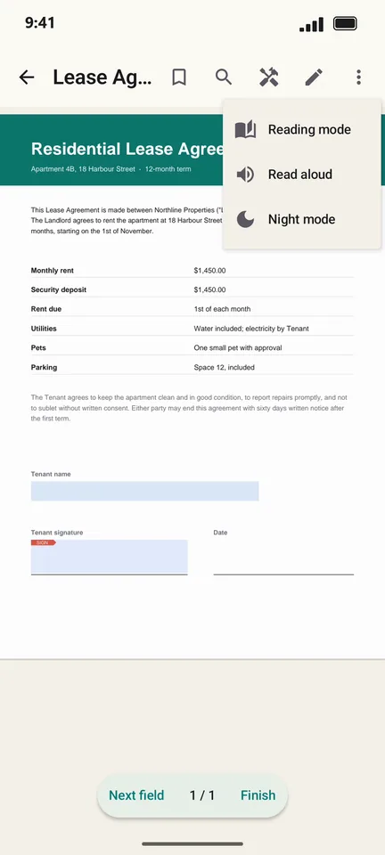
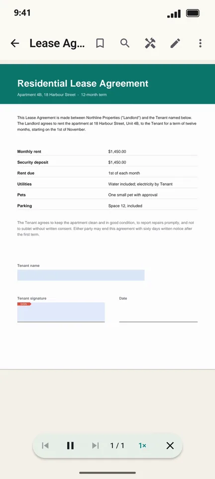

How to listen to a PDF read aloud on Android
Listen to a report on your commute or rest your eyes on a long document. PageCat reads the PDF aloud with your phone's text-to-speech voice and turns the pages as it goes.
Steps
Open the PDF and tap ⋮ in the top bar.

Tap Read aloud. Use the player to pause, skip pages or change the speed.

Good to know
- The voice and language come from your phone's text-to-speech settings.
- Scanned PDFs have no text to read until you run Make searchable (OCR).
Questions
Does Read aloud need internet?
No, as long as your phone's text-to-speech voice is installed, which it usually is.